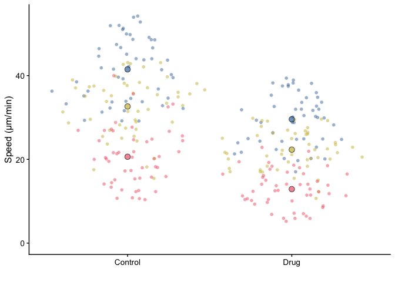

The goal of SuperPlotR is to allow the user to easily generate SuperPlots in R.
SuperPlots are a way to visualise data in a way that emphasises the experimental reproducibility. You can read more about SuperPlots in the original paper:
Lord, S.J., Velle, K.B., Mullins, R.D. & Fritz-Laylin, L.K. (2020) SuperPlots: Communicating reproducibility and variability in cell biology. J. Cell Biol. 219(6):e202001064
Installation
You can install the development version of SuperPlotR from GitHub with:
# install.packages("devtools")
devtools::install_github("quantixed/SuperPlotR")Example
A simple example of how to use SuperPlotR is shown below:
library(SuperPlotR)
superplot(lord_jcb, "Speed", "Treatment", "Replicate", ylab = "Speed (µm/min)")
The data used in this example is included in the package and is from the original paper.
To generate a SuperPlot, you need a data frame that has at least three columns. These columns are:
- the variable that is measured in the experiment,
- the experimental condition,
- the experimental repeat that the measurment comes from.
The superplot function takes the data frame, the names of these three columns, and is further customisable with additional arguments.
See vignette("SuperPlotR") for more examples, or vignette("advanced") for more advanced usage.
More information
My SuperPlot package for IGOR Pro is available here
A popular web-based app for generating SuperPlots, developed by Joachim Goedhart is available here